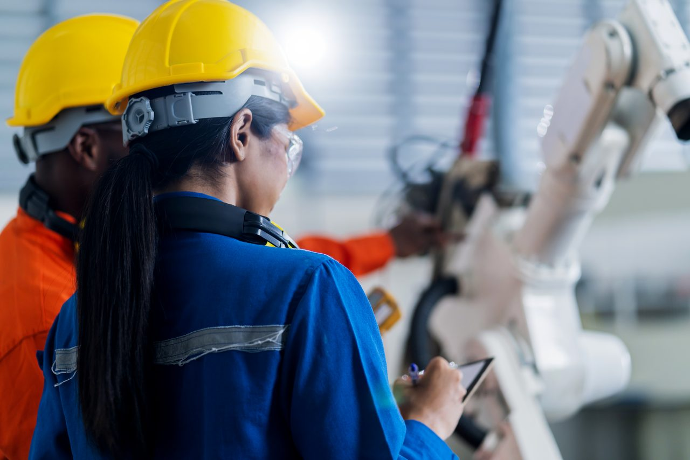
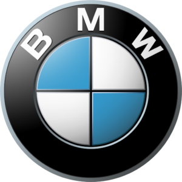
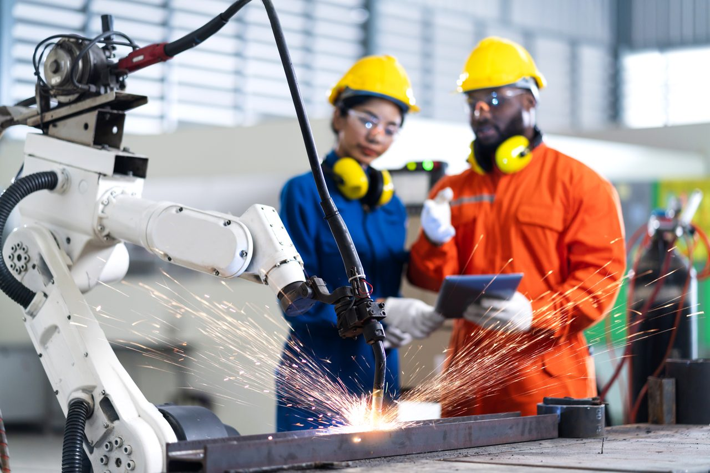
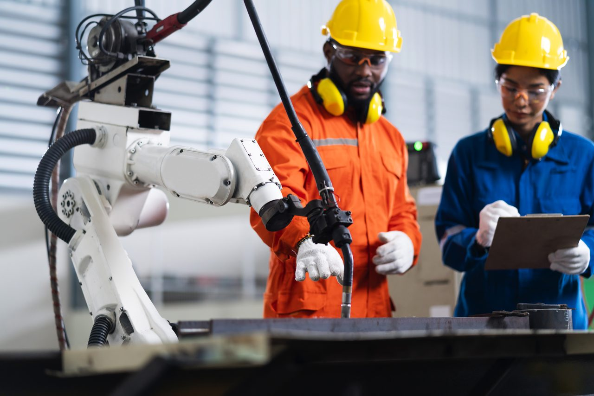
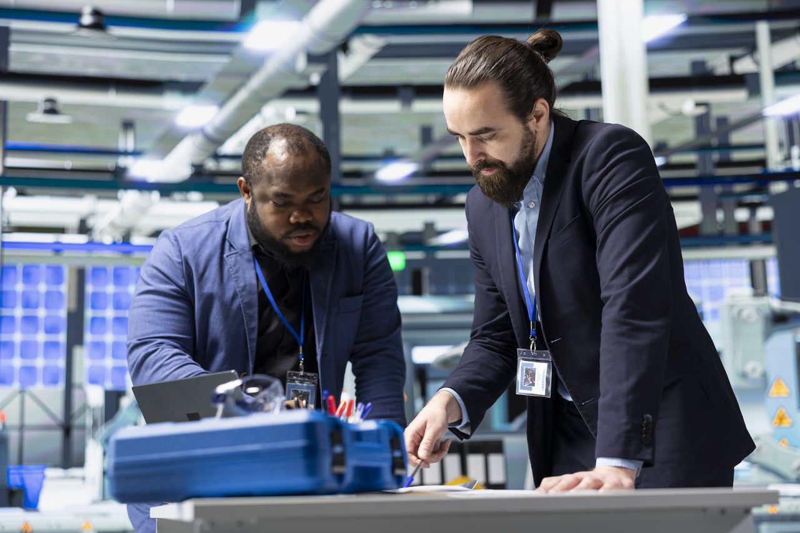
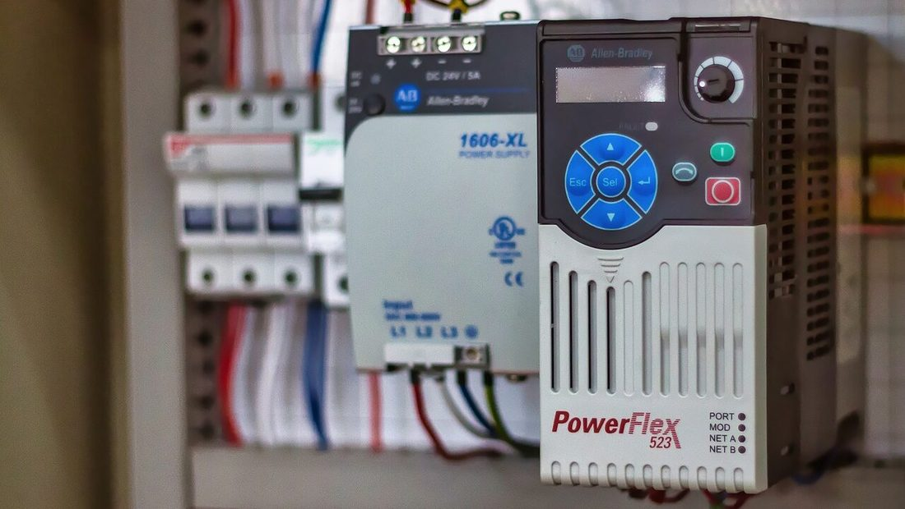
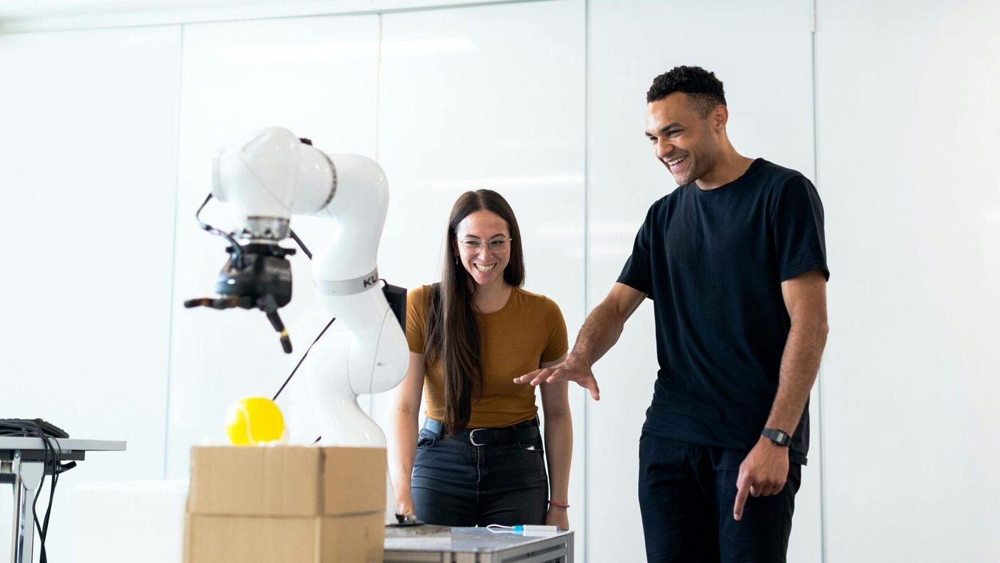
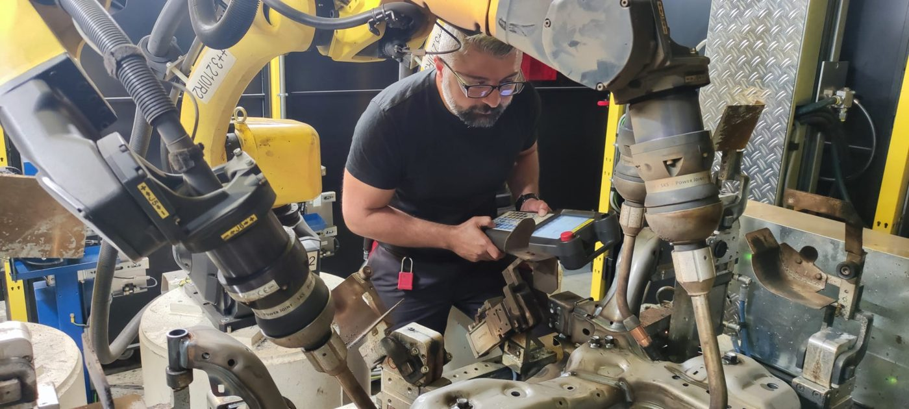

01

Inbetriebnahme
Wir bringen Ihre Anlagen reibungslos und schnell in den produktiven Betrieb – sauber eingerichtet, getestet und übergabebereit.
Anfrage sendenSpezialist für Roboterprogrammierung & Industrieautomation
Optimieren Sie Ihre Fertigungsprozesse mit präziser Roboter- und SPS-Programmierung. KUKA, FANUC, ABB und Siemens-SPS – von der Analyse bis zur Inbetriebnahme aus einer Hand. Standort Peine, Niedersachsen.
Erfahrung mit Anlagen und Anforderungen führender Industrie- und Automobilhersteller

Leistungen

Wir bringen Ihre Anlagen reibungslos und schnell in den produktiven Betrieb – sauber eingerichtet, getestet und übergabebereit.
Anfrage senden
Präzise Roboterprogrammierung, die die Leistung Ihrer Anlage ausschöpft und Ihre Produktivität spürbar erhöht.
Anfrage senden
Fortlaufende Verbesserung bestehender Programme und Prozesse für kürzere Taktzeiten und maximale Effizienz.
Anfrage senden
Wir geben Ihrem Team das Know-how für Bedienung und Wartung – für einen sicheren, eigenständigen Anlagenbetrieb.
Anfrage sendenErgebnisse
Systeme & Steuerungen
Hersteller- und steuerungsübergreifend: Wir programmieren die führenden Roboter- und SPS-Systeme und verbinden sie zu einer durchgängigen Automatisierungslösung.
Programmierung und Inbetriebnahme von KUKA-Robotern – von der klassischen Bahnsteuerung bis zur sensitiven Cobot-Anwendung.
Tägliche Praxis am FANUC-Teach-Pendant: Programmierung, Optimierung und Offline-Simulation für stabile Serienprozesse.
Programmierung und Anpassung von ABB-Industrierobotern für Handhabung, Bearbeitung und automatisierte Fertigungsschritte.
Steuerungstechnik als Bindeglied: Wir programmieren die SPS und verbinden Roboter, Peripherie und übergeordnete Systeme zu einer Einheit.

Branchen
Schweißen, Kleben und Montieren in Taktstraßen – mit dem Anspruch und Qualitätsverständnis aus der Automobilfertigung.
Bearbeiten, Umrüsten und Palettieren: Roboterlösungen, die sich in bestehende Maschinen und Prozesse einfügen.
Pick-and-Place und Kommissionierung – für mehr Durchsatz und gleichbleibende Qualität bei wiederkehrenden Aufgaben.
Löten, Bestücken und Prüfen mit hoher Wiederholgenauigkeit – auch bei kleinen Bauteilen und engen Toleranzen.
Ablauf
Klar, nachvollziehbar und ohne unrealistische Versprechen – von der ersten Analyse bis zum laufenden Support.

Wir schauen uns Anlage, Ziele und Taktanforderungen genau an – vor Ort oder per Remote – und bewerten, was technisch und wirtschaftlich sinnvoll ist.
Sie erhalten ein klares Konzept: Lösungsweg, eingesetzte Systeme, Ablauf und Zeitrahmen – ohne unrealistische Versprechen.
Wir programmieren, integrieren und nehmen in Betrieb – wo möglich per Simulation abgesichert, um Stillstand gering zu halten.
Nach dem Go-live bleiben wir erreichbar: Feinjustierung, Anpassung bei Produktwechseln, Remote-Support und laufende Optimierung.

Über ELMAS Robotic
ELMAS Robotic mit Sitz in Peine ist auf Roboterprogrammierung und Industrieautomation spezialisiert. Hinter dem Unternehmen steht ein Inhaber mit langjähriger Erfahrung in der Roboter- und SPS-Programmierung – geprägt durch seine Zeit beim Automobilzulieferer Magna. Hier wurde gelernt, was in der Serienfertigung wirklich zählt: kurze Taktzeiten, zuverlässige Prozesse und Anlagen, die im Schichtbetrieb laufen müssen.
Wir sind kein abstraktes Beratungshaus. Der Inhaber programmiert selbst – am Teach-Pendant, in der realen Produktionszelle, an FANUC- und KUKA-Anlagen mit echten Karosserien und Werkstücken. Sie sprechen direkt mit der Person, die Ihre Anlage versteht, programmiert und in Betrieb nimmt – nicht mit einer Zwischenebene.
Bewertungen
Sehr guter Roboter-Programmierer! Freundlich, zuverlässig und findet für jedes Problem eine passende Lösung. Arbeitet schnell und professionell – absolut empfehlenswert.
Sehr guter Service und Beratung. Elmas Robotic glänzt durch Zuverlässigkeit und Flexibilität.
Sehr gute kompetente Beratung.
FAQ
Eine pauschale Zahl wäre unseriös, weil die Kosten stark von Aufgabe, System und Aufwand abhängen: Anzahl der Roboter, Komplexität der Bewegungen, Schnittstellen zur SPS und ob vor Ort oder per Offline-Programmierung gearbeitet wird. Nach einem kurzen Gespräch und einer Analyse Ihrer Anlage erhalten Sie ein klares, nachvollziehbares Angebot ohne versteckte Posten.
Das hängt vom Umfang ab. Eine einzelne, klar umrissene Roboterzelle ist oft in wenigen Tagen einsatzbereit, während komplexe, vernetzte Anlagen mehr Zeit benötigen. Wo sinnvoll, sichern wir die Inbetriebnahme vorab durch Simulation und virtuelle Inbetriebnahme ab – das verkürzt die Zeit an der realen Anlage und reduziert Produktionsstillstand.
Ja, das ist ein Schwerpunkt von uns. Wir modernisieren vorhandene Roboter und Steuerungen (Retrofit), reduzieren Zykluszeiten und binden Anlagen in SPS- und MES-Systeme ein. So nutzen Sie Ihre bestehende Technik weiter und steigern gleichzeitig Produktivität und Verfügbarkeit – ohne zwingend komplett neu investieren zu müssen.
An nachweisbarer Praxis an realen Anlagen, an Hersteller-übergreifendem Know-how (KUKA, FANUC, ABB) und an der Fähigkeit, Roboter und SPS sauber zusammenzubringen. Bei ELMAS Robotic programmiert der Inhaber selbst und bringt seine Erfahrung aus dem Automobilumfeld direkt ein – Sie sprechen mit der Person, die Ihre Anlage tatsächlich umsetzt, nicht nur verkauft.
Robotereinsatz lohnt sich besonders bei wiederkehrenden, taktgebundenen oder belastenden Aufgaben sowie bei gleichbleibend hohen Qualitätsanforderungen. Ob sich eine Automatisierung rechnet, lässt sich anhand von Stückzahlen, Prozess und Zielen seriös abschätzen. Genau das klären wir in der Analyse- und Beratungsphase – ehrlich und ohne etwas zu empfehlen, das sich für Sie nicht trägt.
Beides. Viele Aufgaben – Offline-Programmierung, Support, Fehleranalyse und Optimierung – lassen sich effizient per Remote-Zugriff erledigen. Für Inbetriebnahmen und Arbeiten direkt an der Anlage sind wir vor Ort. Unser Standort ist Peine in Niedersachsen; wir sind im Großraum Hannover, Wolfsburg und Braunschweig sowie überregional erreichbar.
Wir arbeiten Hersteller-übergreifend mit KUKA (KRL, Sunrise.OS, WorkVisual), FANUC (TP, iPendant, Roboguide) und ABB. Auf Steuerungsseite programmieren wir Siemens-SPS (TIA Portal, S7) und weitere PLC-Systeme und binden Roboter in übergeordnete MES-Systeme ein.
Ja. Auf Wunsch schulen wir Ihr Team direkt an Ihrer Anlage in Bedienung, Anpassung und Wartung. Ziel ist, dass Ihre Mitarbeiter den täglichen Betrieb sicher beherrschen und kleinere Anpassungen selbst vornehmen können – das macht Sie unabhängiger und reduziert Ausfallzeiten.
Sprechen Sie direkt mit dem Spezialisten – persönlich, schnell und unverbindlich.
Kontakt
Ob Inbetriebnahme, Optimierung, Retrofit oder Schulung: Schildern Sie uns kurz Ihr Vorhaben. Sie erhalten eine ehrliche Einschätzung und ein klares Angebot – direkt vom Spezialisten, der Ihre Anlage umsetzt.